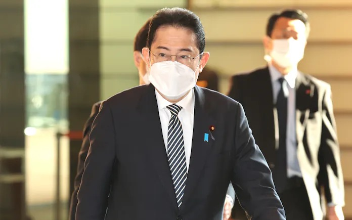
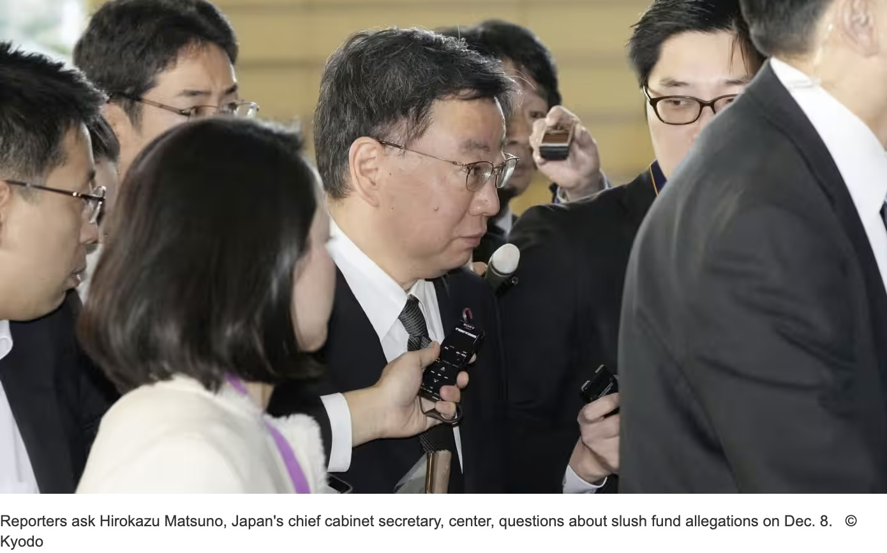

Lunch/Dinner Meeting of the Japansese Prime Minister
--
Prime Minister Fumio Kishida of Japan has been hosting political dining events as part of his administration. Since taking office in October 2021, Kishida has shared meals with various individuals, and here is a ranking of those encounters. The gatherings predominantly include key figures from his own Liberal Democratic Party (LDP) and members of his cabinet. Interestingly, the fifth position is held by a representative from the coalition partner, the KOUMEI party. Additionally, local government officials from his hometown and individuals associated with the 2020 Olympics also feature in the top 25 list.
These political dining events are divided into lunch and dinner sessions. Based on records published in the Nikkei newspaper's electronic edition, the number of lunch and dinner meetings has been counted. Generally, dinner gatherings are more frequent. However, during periods of reduced dining events, both lunch and dinner meetings decrease simultaneously.
There are four notable periods when the number of dining events declined. Pinpointing specific causes is challenging, but these periods coincide with significant events.
Firstly, in February 2022, there was a notable increase in new COVID-19 cases reported by the Tokyo Metropolitan Government.
Secondly, in August 2022, Prime Minister Kishida took about a week of summer vacation, coinciding with his own contraction of COVID-19.
Thirdly, around October 2023, there was a recorded downturn in Cabinet approval ratings across various opinion polls, coinciding with criticisms following the government's economic measures announcement. Lastly, from January 2024 onwards, there was fallout within the LDP factions due to allegations of secret funds. This led to a series of replacements in key cabinet and parliamentary positions.